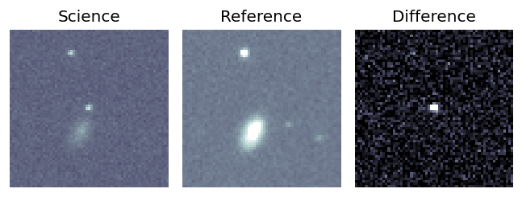
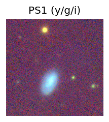
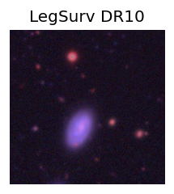
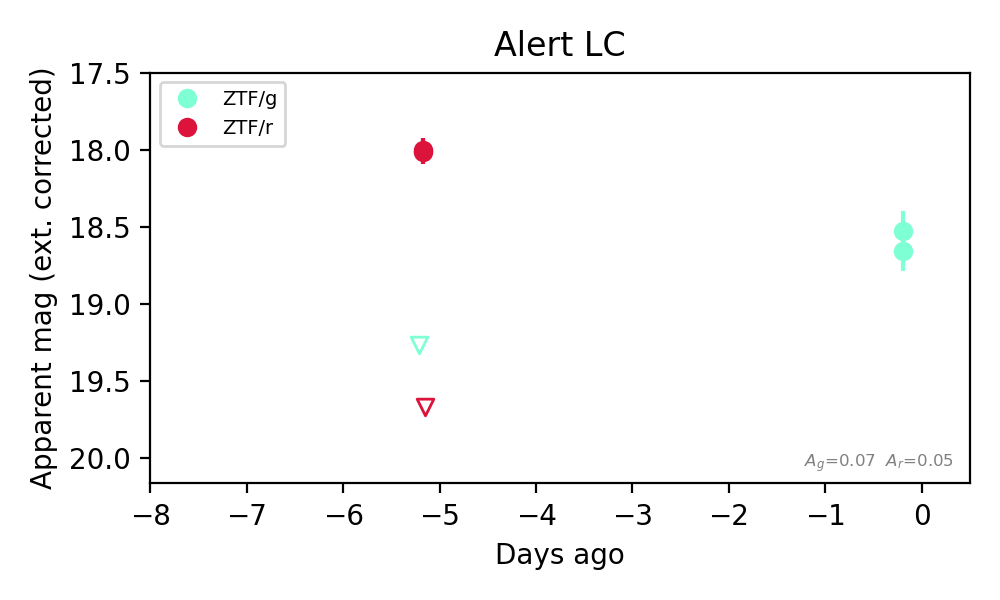

Candidate List 20260930Last night — ZTF: 2,436 passed basic cuts (47 young) · LSST: 0 passed basic cuts (0 young)Previous Day Next Day
Section 1: New Sources (age<1d) Section 2: Old (1-5d) sources observed last nightplaceholder
Section 1: New Afterglow/FBOT Cands Last Night (0)
Section 2: Older Sources Observed Last Night (7)
0. [ZTF] ZTF19adowohp (FBOT?) (TNS: AT 2024zul) [Back to Top] [Share] [Trigger Swift] [Fritz Alert] [Fritz Source] [Lasair]RA, Dec: 91.78226, 32.88264 6h 7m7.74s, 32d52m57.52sGalactic (l, b): 178.89006, 5.96748 ext(g-r) = 0.64


TESS: Sectors [43 44 71 72 73]
SDSS (<15 kpc):Found SDSS phot-z: z=0.74; peak abs mag = -27.92
PS1: 1 source in 3 arcsec Closest: d = 0.09 arcsec photoz=0.63+/-0.05 peak abs mag = -27.49
LegacySurvey: 0 sources in 3 arcsec

Extinction-corrected gr color:
From alerts: 1.58 +/- 99 mag
Extinction-corrected gi color:
From alerts: 1.06 +/- 99 mag
Extinction-corrected ri color:
From alerts: -0.52 +/- 0.07 mag
Rise Rate:
r: 3.38 mag/day
i: 3.0 mag/day
Fade Rate:
r: 0.04 mag/day
1. [ZTF] ZTF26abxkuhv (Afterglow?) [Back to Top] [Share] [Trigger Swift] [Fritz Alert] [Fritz Source] [Lasair]RA, Dec: 315.62611, -19.46162 21h 2m30.27s, -19d-27m-41.85sGalactic (l, b): 28.32868, -37.30659 WARNING: -2.49 deg from ecliptic plane ext(g-r) = 0.056


TESS: Sectors [ 92 116]
PS1: 0 sources in 3 arcsec
LegacySurvey: 0 sources in 3 arcsec

Extinction-corrected gr color:
From alerts: 0.08 +/- 0.02 mag
Extinction-corrected gi color:
From alerts: -0.36 +/- 0.04 mag
Extinction-corrected ri color:
From alerts: -0.28 +/- 0.04 mag
Consistent with synchrotron, g-r>0!
Rise Rate:
g: 0.75 mag/day
r: 0.77 mag/day
i: 0.64 mag/day
Fade Rate:
2. [ZTF] ZTF26abxmaws (Afterglow?) [Back to Top] [Share] [Trigger Swift] [Fritz Alert] [Fritz Source] [Lasair]RA, Dec: 31.46833, -10.36951 2h 5m52.40s, -10d-22m-10.22sGalactic (l, b): 172.77117, -65.74943 ext(g-r) = 0.022


TESS: Sectors [30 97]
NED photo-z only: WISEA J020552.54-102217.8 (G, 7.9″) z=0.0751 [zflag PUN] — not used for peak abs mag
PS1: 0 sources in 3 arcsec
LegacySurvey: 1 sources in 3 arcsec Closest: d = 7.56 arcsec, 341.0 deg (east of north) photoz=0.72 (68% bounds 0.64, 0.82), type=EXP peak abs mag (ext. corrected) = -25.29 (68% bounds -24.99, -25.63)

Extinction-corrected gr color:
From alerts: 1.26 +/- 99 mag
Rise Rate:
g: 0.15 mag/day
r: 0.04 mag/day
Fade Rate:
r: 69.57 mag/day
3. [ZTF] ZTF26abxwicv (FBOT?) [Back to Top] [Share] [Trigger Swift] [Fritz Alert] [Fritz Source] [Lasair]RA, Dec: 243.05314, 11.15845 16h12m12.75s, 11d 9m30.43sGalactic (l, b): 24.31841, 40.33368 ext(g-r) = 0.063


TESS: Sectors [ 51 117]
SDSS (<15 kpc):Found SDSS phot-z: z=0.04; peak abs mag = -18.03
NED host (10 arcsec):Found WISEA J161213.27+110928.3 (G, 8.0″); NED spec-z: z=0.0424 [zflag SLS]; peak abs mag = -18.39
PS1: 0 sources in 3 arcsec
LegacySurvey: 1 sources in 3 arcsec Closest: d = 3.47 arcsec, 258.9 deg (east of north) photoz=0.24 (68% bounds 0.05, 0.75), type=PSF peak abs mag (ext. corrected) = -22.42 (68% bounds -18.68, -25.33)

Rise Rate:
r: 0.35 mag/day
Fade Rate:
4. [ZTF] ZTF26abxztak (FBOT?) [Back to Top] [Share] [Trigger Swift] [Fritz Alert] [Fritz Source] [Lasair]RA, Dec: 98.92481, 60.48933 6h35m41.95s, 60d29m21.60sGalactic (l, b): 154.81791, 21.51495 ext(g-r) = 0.09


TESS: Sectors [20 60 73]
PS1: 0 sources in 3 arcsec
LegacySurvey: 1 sources in 3 arcsec Closest: d = 0.21 arcsec, 259.9 deg (east of north) photoz=0.12 (68% bounds 0.08, 0.23), type=DEV peak abs mag (ext. corrected) = -19.94 (68% bounds -19.01, -21.41)

Extinction-corrected gr color:
From alerts: -0.12 +/- 0.26 mag
Consistent with synchrotron, g-r>0!
Rise Rate:
g: 0.34 mag/day
r: 0.36 mag/day
Fade Rate:
5. [ZTF] ZTF26abxztfm (FBOT?) (TNS: AT 2016abr) [NED transient: AT 2016abr (SN, 0.2″) — reported, not trusted] [Back to Top] [Share] [Trigger Swift] [Fritz Alert] [Fritz Source] [Lasair]RA, Dec: 98.37161, 38.91919 6h33m29.19s, 38d55m9.10sGalactic (l, b): 175.81998, 13.43121 ext(g-r) = 0.156


TESS: Sectors [20 60 73]
PS1: 0 sources in 3 arcsec
LegacySurvey: 1 sources in 3 arcsec Closest: d = 0.27 arcsec, 271.3 deg (east of north) photoz=0.92 (68% bounds 0.73, 1.12), type=PSF peak abs mag (ext. corrected) = -28.05 (68% bounds -27.41, -28.58)

Extinction-corrected gr color:
From alerts: -0.3 +/- 0.05 mag
Rise Rate:
g: 0.7 mag/day
r: 0.84 mag/day
Fade Rate:
g: 0.12 mag/day
r: 0.12 mag/day
6. [ZTF] ZTF26abydudp (FBOT?) [Back to Top] [Share] [Trigger Swift] [Fritz Alert] [Fritz Source] [Lasair]RA, Dec: 359.61903, 13.51659 23h58m28.57s, 13d30m59.71sGalactic (l, b): 103.73447, -47.37138 ext(g-r) = 0.057


TESS: Sectors [42 83]
SDSS (<15 kpc):Found SDSS phot-z: z=0.55; peak abs mag = -23.39
NED host (10 arcsec):Found WISEA J235829.02+133101.5 (G, 7.0″); NED spec-z: z=0.0281 [zflag SUN]; peak abs mag = -16.35
PS1: 0 sources in 3 arcsec
LegacySurvey: 1 sources in 3 arcsec Closest: d = 3.92 arcsec, 137.4 deg (east of north) photoz=0.22 (68% bounds 0.04, 0.67), type=EXP peak abs mag (ext. corrected) = -21.13 (68% bounds -17.17, -23.94)

Extinction-corrected gr color:
From alerts: -0.12 +/- 0.31 mag
Extinction-corrected gi color:
From alerts: -0.34 +/- 0.37 mag
Extinction-corrected ri color:
From alerts: -0.22 +/- 0.26 mag
Consistent with synchrotron, g-r>0!
Rise Rate:
g: 0.21 mag/day
r: 0.14 mag/day
i: 0.06 mag/day
Fade Rate: